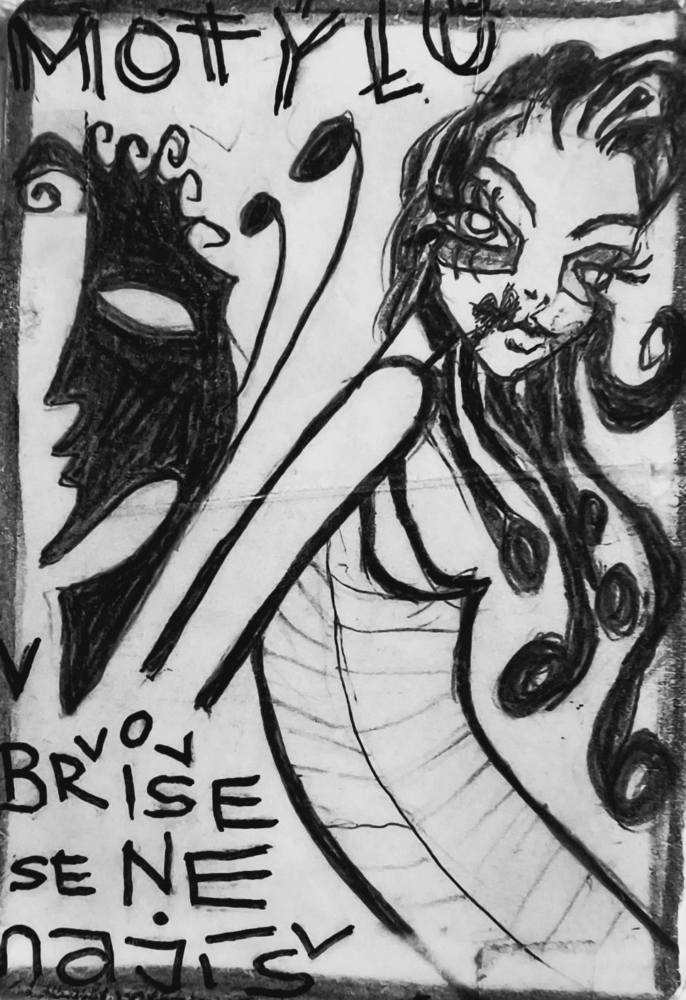

ilustrace · motýlFyzika jazyka · Karta Motýl
„Motýlů v břiše se nenajíš."
Ona má hlad, on jí podá tři motýly. Jeden modrý, jeden žlutý, jeden rozmazaný. Ten třetí se jmenuje Horac. Ona nechce koukat, chce jíst. Motýli jsou lehcí, nezatíží žaludek. Ale ona chce, aby jí žaludek zpíval, ne šeptal básničky. Pohádka o tom, že láska, umění a krása jsou někdy jen motýli — a na hlad je potřeba rohlík.
Pohádka · čtěte pomalu
Přejeďte myší přes podtržené místo pro popis figury. Kliknutím na figuru v tabulce se označí v textu.
12 úhlů pohledu
Odpovězte rychle, bez opravování. Hledáme váš přirozený úhel pohledu.